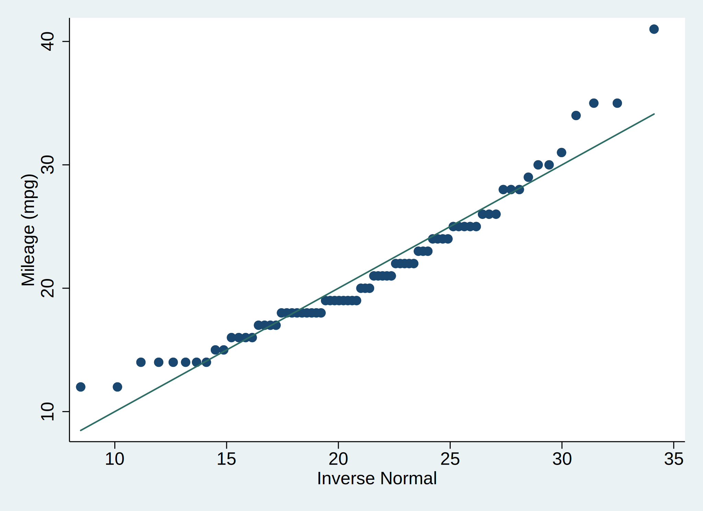
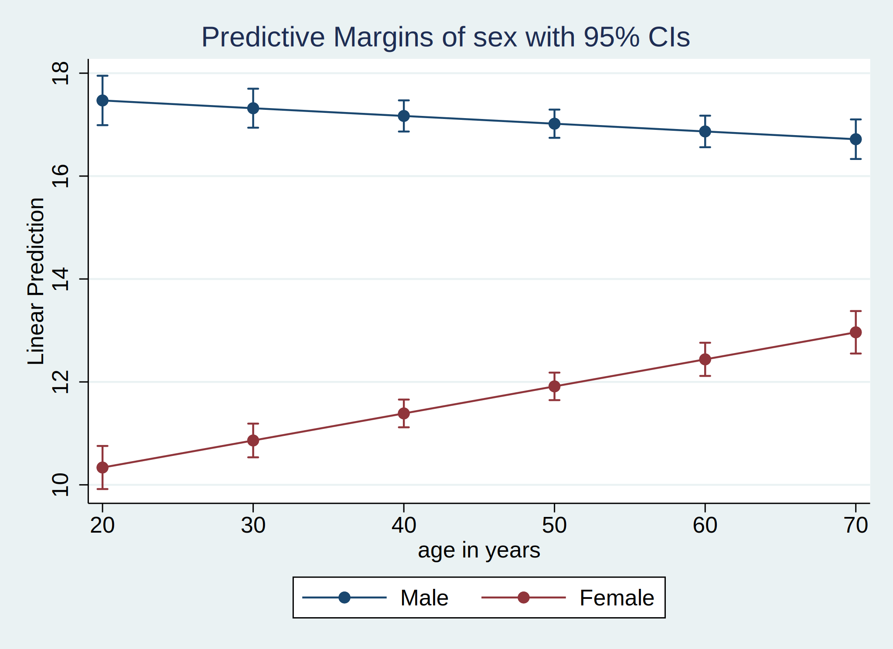

Chapter 4 Univariate (and some Bivariate) Analysis
We start with analyzing single variables at a time, and then quickly discuss a chi-squared test which is a bivariate analysis. While these tests form the basis of many other methods, by themselves they are of limited us. All the tests we discuss here come with two very strong assumptions:
- No other measured or unmeasured variables play a role in any relationship.
- The relationship is the same for any subpopulation of your data.
To see why these assumptions are so strong, lets consider the two-sample t-test. We’ll discuss them in depth below, but the short version is that a two-sample t-test compares whether two groups have the same average value. If you were comparing average height between two groups, perhaps you’d find that one group was much taller than the other. But what if the shorter group was almost entirely made of children? We have no way of knowing whether the difference between groups is due to this or due to real differences.
For the second assumption, imagine some scenario where you have two groups. Among men, there is a large difference between groups, whereas among women, there is no difference between groups. On average (assuming a roughly 50/50 gender split), you’d see a moderate difference. But no one actually has a moderate difference! The two subgroups have different effects, so the two-sample t-test captures neither!
That said, there are a few situations where these tests are useful as stand-alone tests.
- Exploratory/descriptive/pilot studies: Situations when are you not making strong claims, merely describing something you see in the data.
- Very small sample sizes: While not ideal, small sample sizes can’t handle more complicated analysis, so these simple ones are all you have.
- In randomized controlled experiments (such as in a lab): In these situations, you truly can ensure that both those assumptions are met. Just randomization is not sufficient, as the benefit of randomization is only guaranteed theoretically for infinitely large samples. Randomization helps a lot, but it’s not perfect!
Reload the auto data set
. sysuse auto, clear
(1978 Automobile Data)
4.1 One-sample t-test
A one-sample t-test tests whether the mean of a variable is equal to some constant. It is not needed a lot of the time (if we hypothesize that the average test score is 70, and every students get above an 80, why would we need to test this?), but we introduce it here just as a basis of further methods.
There are several assumptions necessary for a one-sample t-test, most of which are trivial/not that important. The two relatively important ones are
- Independence. Each value must come from an independent source. If you have repeated measures (e.g. two different measures for the same person), this is violated. See the section of mixed models for dealing with this sort of data.
- The distribution of the mean is normal. Note that this assumption is not about the data itself. This assumption is valid if either the sample suggests that the data is normal (a bell-curve) or the sample size is large (above ~30)4. If this assumption does not hold, we generally still use the t-test, although there are tests called “non-parametric” tests which do not require this assumption. Not everyone is convinced they are necessary.
There is no way to test the independence assumption, you must determine this based upon your knowledge of the data.
We can try and determine whether the normal distribution is valid for the data, but note that failing to find this does not imply the normality of the mean assumption is violated. This can be checked with a histogram or a qq-plot.
Let’s test whether the average mileage in the data is different from 20.
. hist mpg, normal
(bin=8, start=12, width=3.625)

In a histogram, we are looking for violations from the bell-shape of a normal curve. We added the normal curve to the plot by the normal option. We can see that while the data is not perfectly normal, it also is not too far off. We can look at a qq-plot for further details.
. qnorm mpg

With a qq-plot, we are looking for the points to roughly fall in a straight line, alone the 45-degree line. Here we see some mild violations of those, especially at either end.
Put together, this indicates that normality is not perfect, but its also not a terrible violation.
However, we don’t really care! The sample size is large enough that that assumption is valid. We can therefore perform our test using the ttest command.
. ttest mpg == 20
One-sample t test
------------------------------------------------------------------------------
Variable | Obs Mean Std. Err. Std. Dev. [95% Conf. Interval]
---------+--------------------------------------------------------------------
mpg | 74 21.2973 .6725511 5.785503 19.9569 22.63769
------------------------------------------------------------------------------
mean = mean(mpg) t = 1.9289
Ho: mean = 20 degrees of freedom = 73
Ha: mean < 20 Ha: mean != 20 Ha: mean > 20
Pr(T < t) = 0.9712 Pr(|T| > |t|) = 0.0576 Pr(T > t) = 0.0288
Our null hypothesis, the claim we are trying to see whether we have the evidence to reject, is that the average mpg in the population represented by this data is 20. We sometimes also just call 20, the value the null hypothesis is testing, the null hypothesis (e.g. “We are testing against the null hypothesis of 20.”).
Looking at the analysis, we see that we get some summary statistics. The 95% confidence interval represents the range which, if we were to draw repeated samples of the same size (74) from the population of all cars, we would expect 95% of the estimated means to fall in that range.
Below that, we see some details of the test being run. The important detail is that the null Hypothesis (Ho) is what you meant for it to be.
Finally, we get our p-values. There are three separate ones given for three different alternative hypotheses - testing whether the mean is less than 20, greater than 20, or simply not equal to 20. Each p-value represents the probability of observing a mean as extreme as the one we saw if 20 was the true population mean. In other words, we get the following three interpretations:
- There is 97.12% chance that if the true mean were 20, we would observe a sample mean of 21.2973 or lower.
- There is 2.88% chance that if the true mean were 20, we would observe a sample mean of 21.2973 or higher.
- There is 5.76% chance that if the true mean were 20, we would observe a sample mean of 21.2973 or higher or a sample mean of 18.7027 (this is calculated as 20 - (21.2973 - 20), in other words, 1.2973 below 20).
The last interpretation (corresponding to Ha: mean != 20 from the output) is known as the two-sided p-value, and should be your default. The other two, known as one-sided p-values, can be used if a priori you decide that you’re only interested in one direction.
The typical threshold used is p = .05, so we would fail to reject the null hypothesis (since .0576 > .05), although this is extremely close to significant!
(Of course that first p-value & interpretation is unnecessary - the observed test statistic is greater than 20, so there’s no chance we’d be able to make the argument that the true mean is less than 20!)
4.2 Two-sample t-test
While the one-sided t-test isn’t used very often, the two-sample version is. There are two different variations of it.
4.2.1 Independent
The independent two-sample t-test arises when you have two independent groups which have the same measurement, and you wish to test whether the mean of the two groups is equivalent. The same basic assumptions, independence (although here it’s both within group [each observation is independent from each other] and between groups [the two groups are independent, e.g. these are not repeated measures on the same person]) and normality of the mean.
For example in our data, we can test whether foreign and American cars have the same average mileage. We will again use the ttest command, though slightly differently.
. ttest mpg, by(foreign)
Two-sample t test with equal variances
------------------------------------------------------------------------------
Group | Obs Mean Std. Err. Std. Dev. [95% Conf. Interval]
---------+--------------------------------------------------------------------
Domestic | 52 19.82692 .657777 4.743297 18.50638 21.14747
Foreign | 22 24.77273 1.40951 6.611187 21.84149 27.70396
---------+--------------------------------------------------------------------
combined | 74 21.2973 .6725511 5.785503 19.9569 22.63769
---------+--------------------------------------------------------------------
diff | -4.945804 1.362162 -7.661225 -2.230384
------------------------------------------------------------------------------
diff = mean(Domestic) - mean(Foreign) t = -3.6308
Ho: diff = 0 degrees of freedom = 72
Ha: diff < 0 Ha: diff != 0 Ha: diff > 0
Pr(T < t) = 0.0003 Pr(|T| > |t|) = 0.0005 Pr(T > t) = 0.9997
The output is very similar to above. We get some descriptives by group, and combined, as well as a confidence interval for the difference. Notice that the null hypothesis (Ho) is simply 0 because we are testing whether the difference between the groups is statistically significant, regardless of the actual values of the means.
The p-values have the same interpretation, though in terms of the difference of means rather than just the means. More-so than even in the one-sided test, you should use the two-sided p-value, so our p-value is 0.0005. Just as a note, do not report this p-value as 0 if you round! Instead, report that the p-value is less than .01 or less than .001.
“There is less than a .1% chance that, if the average mileage was equivalent in domestic and foreign cars, we would observe a difference in the average mileage of 4.945804 or more.” Note that the sign of the difference doesn’t matter here because we’re looking at the two-sided version; the sign tells us that foreign cars in the sample have higher average mileage than domestic cars.
However, there is an additional assumption here that we neglected; namely that the variances of the two groups are equivalent. If you make this assumption, then the above analysis is sufficient. However, if you don’t make this assumption, you can instead run the two-sample t-test with unequal variances by adding the unequal option.
. ttest mpg, by(foreign) unequal
Two-sample t test with unequal variances
------------------------------------------------------------------------------
Group | Obs Mean Std. Err. Std. Dev. [95% Conf. Interval]
---------+--------------------------------------------------------------------
Domestic | 52 19.82692 .657777 4.743297 18.50638 21.14747
Foreign | 22 24.77273 1.40951 6.611187 21.84149 27.70396
---------+--------------------------------------------------------------------
combined | 74 21.2973 .6725511 5.785503 19.9569 22.63769
---------+--------------------------------------------------------------------
diff | -4.945804 1.555438 -8.120053 -1.771556
------------------------------------------------------------------------------
diff = mean(Domestic) - mean(Foreign) t = -3.1797
Ho: diff = 0 Satterthwaite's degrees of freedom = 30.5463
Ha: diff < 0 Ha: diff != 0 Ha: diff > 0
Pr(T < t) = 0.0017 Pr(|T| > |t|) = 0.0034 Pr(T > t) = 0.9983
The unequal test is slightly more conservative, but there has been some work (e.g. Delacre et al 2017, Ruxton 2006) showing that you should always use the unequal version.
The equal variance version (the first one we ran) is known as Student’s5 t-test, and the unequal variance version (with the unequal option) is known as Welch’s t-test.
If you want to test whether the variance between the two groups is equal, you can use sdtest in a similar fashion to ttest (sdtest mpg, by(foreign)).
4.2.2 Paired
We noted in the assumptions above that we need the two groups to be independent. What if they aren’t? An example of paired data would include before-and-after measures or measures from two family members. In both cases, it is reasonable to assume the two measures from the same person or family are more similar than a measure from one person against a measure from another person.
The auto data set does not have a good example of paired data, so lets use the “bpwide” data instead.
. sysuse bpwide, clear
(fictional blood-pressure data)
. list in 1/5
+-----------------------------------------------+
| patient sex agegrp bp_bef~e bp_after |
|-----------------------------------------------|
1. | 1 Male 30-45 143 153 |
2. | 2 Male 30-45 163 170 |
3. | 3 Male 30-45 153 168 |
4. | 4 Male 30-45 153 142 |
5. | 5 Male 30-45 146 141 |
+-----------------------------------------------+
We have measures from different patients, including a before and after measure of the blood pressure. We again use ttest to perform the test:
. ttest bp_after == bp_before
Paired t test
------------------------------------------------------------------------------
Variable | Obs Mean Std. Err. Std. Dev. [95% Conf. Interval]
---------+--------------------------------------------------------------------
bp_after | 120 151.3583 1.294234 14.17762 148.7956 153.921
bp_bef~e | 120 156.45 1.039746 11.38985 154.3912 158.5088
---------+--------------------------------------------------------------------
diff | 120 -5.091667 1.525736 16.7136 -8.112776 -2.070557
------------------------------------------------------------------------------
mean(diff) = mean(bp_after - bp_before) t = -3.3372
Ho: mean(diff) = 0 degrees of freedom = 119
Ha: mean(diff) < 0 Ha: mean(diff) != 0 Ha: mean(diff) > 0
Pr(T < t) = 0.0006 Pr(|T| > |t|) = 0.0011 Pr(T > t) = 0.9994
We see that the blood pressure after is slightly lower (151 vs 156), and the two-sided p-value is statistically significant!
While we technically used the paired t-test for this, behind the scenes, this is identical to generating a difference variable (e.g. post score - pre score) and performing the one-sample t-test:
. gen bp_change = bp_after - bp_before
. ttest bp_change == 0
One-sample t test
------------------------------------------------------------------------------
Variable | Obs Mean Std. Err. Std. Dev. [95% Conf. Interval]
---------+--------------------------------------------------------------------
bp_cha~e | 120 -5.091667 1.525736 16.7136 -8.112776 -2.070557
------------------------------------------------------------------------------
mean = mean(bp_change) t = -3.3372
Ho: mean = 0 degrees of freedom = 119
Ha: mean < 0 Ha: mean != 0 Ha: mean > 0
Pr(T < t) = 0.0006 Pr(|T| > |t|) = 0.0011 Pr(T > t) = 0.9994
4.2.3 Comparing Proportions
If you have a ordinal variable (a categorical variable that has an ordering to it), a t-test is often still appropriate6. However, for binary variables, we should not use a regular t-test. Instead we use a Z-test7.
The command in stata is prtest and it functions identically to ttest:
One-sample:
. webuse pneumoniacrt, clear
(Bacterial pneumonia episodes data from CRT (Hayes and Moulton, 2009))
. prtest pneumonia = .25
One-sample test of proportion Number of obs = 449
------------------------------------------------------------------------------
Variable | Mean Std. Err. [95% Conf. Interval]
-------------+----------------------------------------------------------------
pneumonia | .1959911 .0187338 .1592736 .2327086
------------------------------------------------------------------------------
p = proportion(pneumonia) z = -2.6429
Ho: p = 0.25
Ha: p < 0.25 Ha: p != 0.25 Ha: p > 0.25
Pr(Z < z) = 0.0041 Pr(|Z| > |z|) = 0.0082 Pr(Z > z) = 0.9959
Independent two-sample:
. prtest pneumonia, by(vaccine)
Two-sample test of proportions MnCC: Number of obs = 238
PnCRM7: Number of obs = 211
------------------------------------------------------------------------------
Group | Mean Std. Err. z P>|z| [95% Conf. Interval]
-------------+----------------------------------------------------------------
MnCC | .2226891 .0269686 .1698316 .2755466
PnCRM7 | .1658768 .0256075 .1156871 .2160665
-------------+----------------------------------------------------------------
diff | .0568123 .0371894 -.0160775 .1297021
| under Ho: .0375355 1.51 0.130
------------------------------------------------------------------------------
diff = prop(MnCC) - prop(PnCRM7) z = 1.5136
Ho: diff = 0
Ha: diff < 0 Ha: diff != 0 Ha: diff > 0
Pr(Z < z) = 0.9349 Pr(|Z| > |z|) = 0.1301 Pr(Z > z) = 0.0651
Paired two-sample
. sysuse bpwide, clear
(fictional blood-pressure data)
. gen bp_beforehigh = bp_before > 160
. gen bp_afterhigh = bp_after > 160
. list *high in 1/5
+---------------------+
| bp_bef~h bp_aft~h |
|---------------------|
1. | 0 0 |
2. | 1 1 |
3. | 0 1 |
4. | 0 0 |
5. | 0 0 |
+---------------------+
. prtest bp_afterhigh = bp_beforehigh
Two-sample test of proportions bp_afterhigh: Number of obs = 120
bp_beforehig: Number of obs = 120
------------------------------------------------------------------------------
Variable | Mean Std. Err. z P>|z| [95% Conf. Interval]
-------------+----------------------------------------------------------------
bp_afterhigh | .2583333 .039958 .180017 .3366496
bp_beforehig | .35 .0435412 .2646609 .4353391
-------------+----------------------------------------------------------------
diff | -.0916667 .0590972 -.207495 .0241617
| under Ho: .0593927 -1.54 0.123
------------------------------------------------------------------------------
diff = prop(bp_afterhigh) - prop(bp_beforehig) z = -1.5434
Ho: diff = 0
Ha: diff < 0 Ha: diff != 0 Ha: diff > 0
Pr(Z < z) = 0.0614 Pr(|Z| > |z|) = 0.1227 Pr(Z > z) = 0.9386
4.3 Chi-square test
We’ve seen how to handle continuous and binary variables, and even some ordinal variables. However, if we want to look at a categorical variable which is not binary and we cannot treat as continuous, we can instead use a \(\chi^2\) test (\(\chi\) is a Greek letter which is spelled “chi” in English, and rhymes with “why”). There are a few variations on the \(\chi^2\) test, the version we talk of here is a test of association, where we are testing the null hypothesis that the distribution of one variable is the same at every level of another variable. Let’s return to the auto data set, and compare rep78 (Repair Record 1978) and foreign. We’ll start by looking at a crosstab.
. sysuse auto, clear
(1978 Automobile Data)
. tab foreign rep78
| Repair Record 1978
Car type | 1 2 3 4 5 | Total
-----------+-------------------------------------------------------+----------
Domestic | 2 8 27 9 2 | 48
Foreign | 0 0 3 9 9 | 21
-----------+-------------------------------------------------------+----------
Total | 2 8 30 18 11 | 69
If you’re not familiar with crosstabs, each cell represents the number of observations which fall into the category - for example, there are 8 cars which are both Domestic and have a Repair Record of 2.
We can think of testing whether the association between these two variables exists from either direction - we can either ask “Is the probability of a car having a specific repair record the same among domestic cars as among foreign cars”, or “Is the probability of a car being foreign or domestic the same across all levels of repair record”. We test it by adding the chi2 option to tab:
. tab foreign rep78, chi2
| Repair Record 1978
Car type | 1 2 3 4 5 | Total
-----------+-------------------------------------------------------+----------
Domestic | 2 8 27 9 2 | 48
Foreign | 0 0 3 9 9 | 21
-----------+-------------------------------------------------------+----------
Total | 2 8 30 18 11 | 69
Pearson chi2(4) = 27.2640 Pr = 0.000
Here we can see that the p-value (pr) associated with the \(\chi^2\) test is very low (less than .001, p-values are never 08!), so we can reject the null hypothesis and claim there is evidence of a statistically significant association between foreign and rep78.
Note that the \(\chi^2\) test ignores scale - if we had 4,800 Domestic cars instead of 48, and the percentage at each Repair Record were the same (e.g. instead of 8 Domestic cars with Repair Record of 2, we had 800), we would get the same test result.
Finally, the critiques above about the lack of usefulness of t-tests extends to \(\chi^2\) tests as well.
4.3.1 Fisher’s Exact Test
However, we probably should not have performed a \(\chi^2\) test here. One important assumption of the \(\chi^2\) test is that the expected count in each cell is at least 5. The expected count is the row total times the column total divided by the total number. For example, we looked at the 8 vehicles that were domestic which a Repair Record of 2. The row total is the number of domestic cars (48) and the column total is the number of cars with Repair Record of 2 (8), with a total of 69 cars overall (rep78 has 5 missing values). Therefore, the expected count is
\[ \frac{48*8}{69} = 5.565 \]
This passes the assumption. To emphasize - this passed because the expected count is above 5. The fact that the observed count (8) is above 5 plays no role in this assumption.
Rather than manually calculating this for each entry, the expected option tells Stata to do it for us.
. tab foreign rep78, expected
+--------------------+
| Key |
|--------------------|
| frequency |
| expected frequency |
+--------------------+
| Repair Record 1978
Car type | 1 2 3 4 5 | Total
-----------+-------------------------------------------------------+----------
Domestic | 2 8 27 9 2 | 48
| 1.4 5.6 20.9 12.5 7.7 | 48.0
-----------+-------------------------------------------------------+----------
Foreign | 0 0 3 9 9 | 21
| 0.6 2.4 9.1 5.5 3.3 | 21.0
-----------+-------------------------------------------------------+----------
Total | 2 8 30 18 11 | 69
| 2.0 8.0 30.0 18.0 11.0 | 69.0
We see that the assumption fails in a number of cells.
There are several possible solutions. One is to perform instead of a \(\chi^2\) test, use a Fisher’s Exact test. Originally designed for 2x2 designs (two binary variables), it can be carried out for any arbitrarily large crosstab - in theory. In practice, the calculation is simply too demanding for large tables. This 2x5 table is fine, but for example, a 9x9 table would fail.
. tab foreign rep78, exact
Enumerating sample-space combinations:
stage 5: enumerations = 1
stage 4: enumerations = 3
stage 3: enumerations = 24
stage 2: enumerations = 203
stage 1: enumerations = 0
| Repair Record 1978
Car type | 1 2 3 4 5 | Total
-----------+-------------------------------------------------------+----------
Domestic | 2 8 27 9 2 | 48
Foreign | 0 0 3 9 9 | 21
-----------+-------------------------------------------------------+----------
Total | 2 8 30 18 11 | 69
Fisher's exact = 0.000
We obtain the same conclusion.
If your crosstab is too large for the exact test, you may need to consider rebinning or an entirely different analysis method such as some sort of regression such as logistic regression if one of the variables was binary, or multinomial or ordinal regression if neither are binary. (Multinomial and ordinal regression will not be covered in this workshop.)
4.4 Exercise 3
Load up the NHANES data.
sysuse nhanes2, clear
- We don’t care about normality assumptions here. Why?
- The average height of all men in America is 5’9" (176 cm). Does this sample appear representative of this fact? (E.g. is there evidence that the average in the sample differs from this?)
- We would expect height and weight to differ by gender. Is there any evidence that age does?
-
Take a look at a crosstab of
raceanddiabetes. Does it look like the percentage of diabetics is the same across race? Thecolorrowoption might help here. Test this with a \(\chi^2\) test.
4.5 Citations
- Delacre, Marie, Daniël Lakens, and Christophe Leys. “Why Psychologists Should by Default Use Welch’s t-test Instead of Student’s t-test.” International Review of Social Psychology 30.1 (2017).
- Ruxton, Graeme D. “The unequal variance t-test is an underused alternative to Student’s t-test and the Mann–Whitney U test.” Behavioral Ecology 17.4 (2006): 688-690.